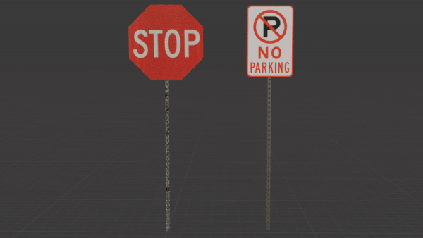
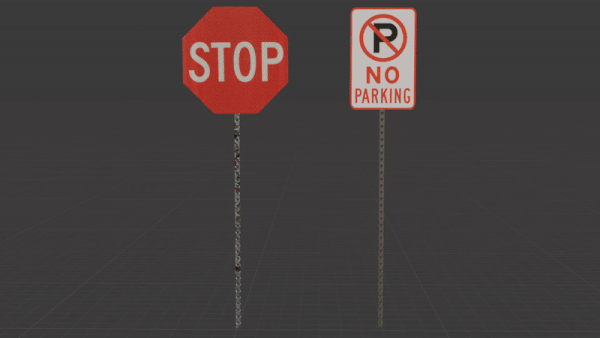

Collaborative 3D animated short film exploring control, agency, and performance.

Collaborative 3D animated short film exploring control, agency, and performance.
Texturing, color grading, lighting, prop modeling, and visual development
Jaden Andrews, Kevin Gomez, Ethan Flynn, Georgia Weaver, Nemo Rosas
Blender, After Effects, DaVinci Resolve, Figma, Substance Painter
3D Animated Short Film
The Linden Performer was a collaborative 3D animated short film created by our team — Kevin, Georgia, Ethan, Nemo, and myself. Our goal was to combine our diverse skill sets to produce a high-quality piece suitable for submission to film festivals.
The concept went through several iterations before settling on the story of a sentient marionette who loves to dance but is ultimately exploited by her puppeteer. Presented as a “silent” film, the narrative explores themes of control and agency as the marionette transitions from dancing freely in an attic to performing on stage with strings.
While she is celebrated for her sentience at first, the puppeteer soon grows jealous and begins manipulating her more aggressively. In the climax, she resists his control and triumphs. The abstract ending follows her fall into the void, underscored by her leitmotif and a “tug-of-war” musical theme symbolizing her reclaimed autonomy.
As a team, we faced the challenges of working under a tight production schedule and experimenting with industry-standard tools like motion capture and advanced rendering workflows. My personal contributions focused on texturing, color grading, prop modeling, lighting, and visual tone.


 
